Redstone Additions¶
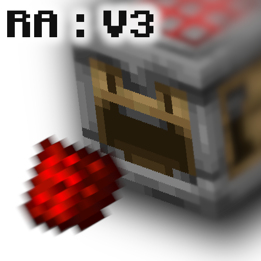
Version: v5.1.2
Minecraft: 1.21+
Author: AnCarsenat
Redstone Additions is a vanilla datapack with automation, storage, wireless signaling, sensors, chunk loading, multiblocks, and transport networks.
Player-first wiki
This home page is intentionally dense so most players can stay on one page and only open extra docs when they need deep technical details.
Quick Start¶
- Download from Modrinth or clone from GitHub.
- Place
redstone_additionsin your world datapacks folder. - Run
/reload. - Run
/function ra:give_all_itemsto get one prefilled bundle per namespace.
Path example:
.minecraft/saves/<world>/datapacks/redstone_additions/
Visual Module Atlas¶
| Module | What you get | Recipe preview |
|---|---|---|
| Logic Gates | 6 timing/logic blocks | 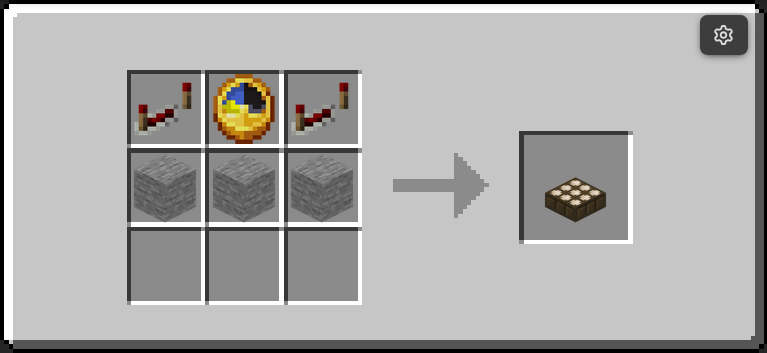 |
| Interactive Machines | 11 automation/utility blocks | 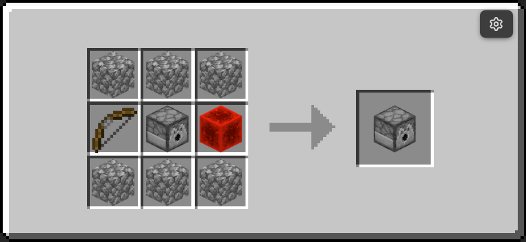 |
| Storage | Boxer + Unboxer workflow | 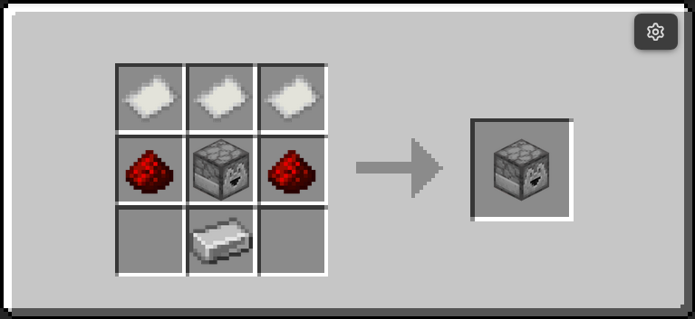 |
| Sensors | Entity detector + tag operators | 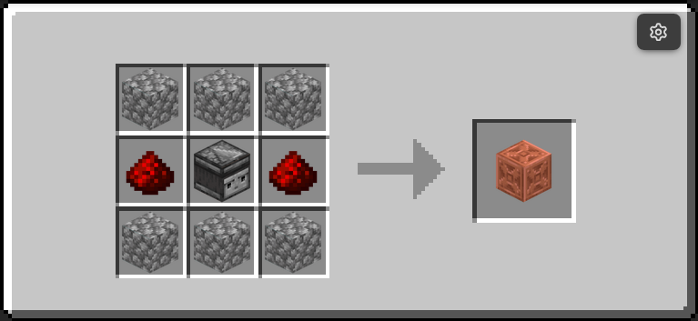 |
| Wireless Redstone | Emitter, Receiver, and Remote | 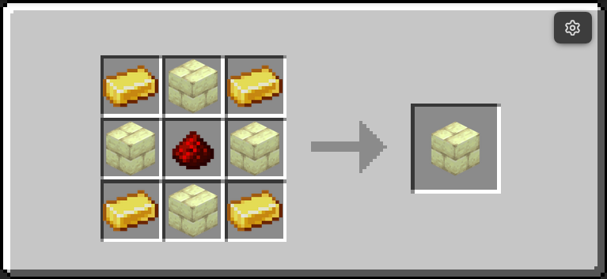 |
| Transport Networks | Liquid, gas, and EU transport | 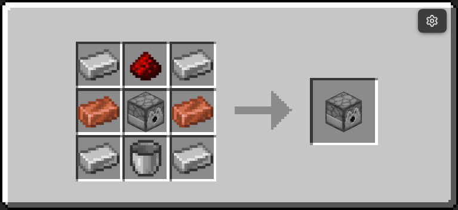 |
| Chunk Loader | 1 force-load block | 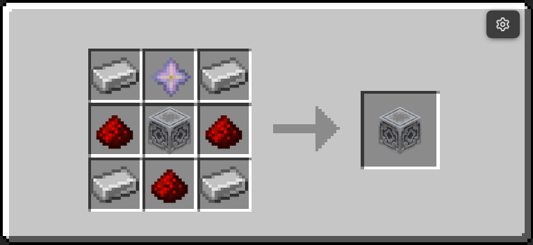 |
| Multiblocks | 5 base tiers + structures |  |
Current pack totals:
- 46 placeable custom blocks
- 5 tools (Wrench, Creative Data Handler, Data Handler, Goggles, Redstone Remote)
Commands Most Players Need¶
| Command | Purpose |
|---|---|
/function ra:give_all_items |
Full starter kit (all namespaces) |
/function ra_gates:items/give_all |
Logic gates bundle |
/function ra_interactive:items/give_all |
Interactive machines bundle |
/function ra_storage:items/give_all |
Boxer and Unboxer bundle |
/function ra_sensors:items/give_all |
Sensor bundle |
/function ra_wireless:items/give_all |
Wireless bundle |
/function ra_wires:items/give_all |
Transport/EU bundle |
/function ra_chunk_loader:items/give_all |
Chunk loader bundle |
/function ra_multiblock:blocks/give_all |
Multiblock bases |
/function ra:uninstall |
Opens uninstall confirmation dialog |
Tools At A Glance¶
| Tool | Give command | Recipe preview | Main use |
|---|---|---|---|
| Wrench | /function ra:tools/wrench/give |
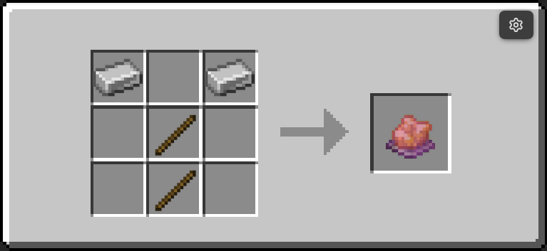 |
Mode cycling and multiblock assembly |
| Data Handler | /function ra:tools/data_handler/give |
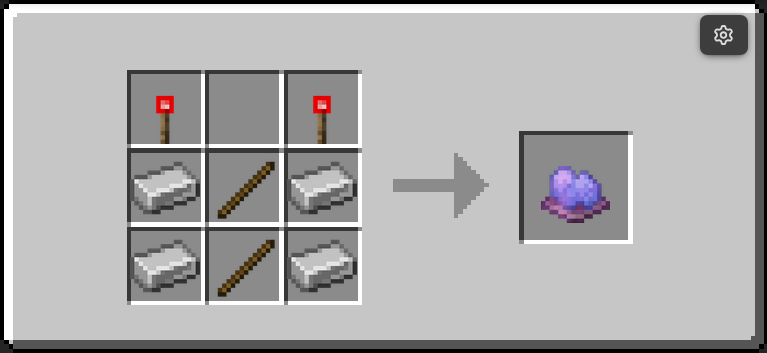 |
Edit nearby block data.properties |
| Goggles | /function ra:tools/goggles/give |
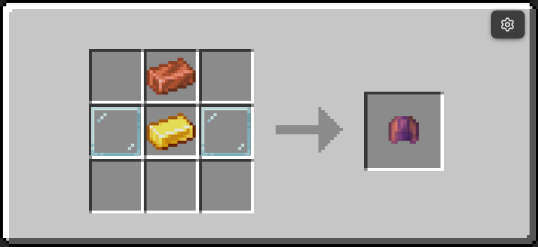 |
In-world status overlays |
What Is New In v5.1.2¶
- Reworked docs for GitHub Pages publishing and refreshed key module pages.
- Updated recipe and block-reference imagery across core modules.
- Normalized liquid and gas transport tiers back to copper/iron naming.
- Fixed multiblock base recipes after transport tier updates.
- Removed the experimental Pusher block from the active release set.
Need More Detail¶
For most players, this home page plus Block Reference is enough.
Open these pages only when needed: